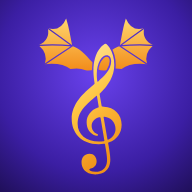

Clefwing Help
Piano note reading for young pianists
Clefwing can't hear my piano
- Check Clefwing is allowed to use the microphone: Settings › Clefwing › Microphone.
- Stand the iPad or iPhone on the piano's music stand, close to the keys, with nothing covering the microphone.
- Turn off a sustain pedal while you play, and keep the room quiet (TV and talking can confuse it).
- In Grown-ups (tap ⚙︎ on the home screen), use the tuning check: if your piano is a little out of tune, Clefwing adjusts to it.
- Digital pianos work too. Turn the volume up, and play through the speakers rather than headphones.
We don't have a piano with us
On the home screen, set Playing on to 📱 Screen to play on an on-screen keyboard instead. It earns half the gems and XP: a real piano is the best way to learn, because your fingers learn where the notes are.
More than one child in the family
Each child can have their own player, with their own dragon, progress and gems. Tap your name at the top of the home screen, then Add a player. Grown-ups can remove players in the Grown-ups area.
Will we lose our progress?
Progress is saved on your device, and in the iOS app a copy is kept in your own iCloud (Clefwing has no accounts and sends nothing to us). On a new or replaced iPad or iPhone, sign in with the same Apple ID, install Clefwing, and it offers to restore your progress before you add a player. You can also restore in the Grown-ups area, under iCloud backup, and undo a restore there. The backup can be turned off there too.
On the web, progress is saved in the browser only: clearing the website data erases it.
Grown-ups area
Tap ⚙︎ on the home screen and answer a quick times-table question. There you can see this week's practice for every player, set the daily goal and reminders, add real-life prizes to spend gems on, see which notes are tricky, check the microphone and tuning, and manage players.
The daily goal starts at 5 minutes. Five minutes is a win: a little every day builds reading faster than a long practice now and then. Prizes work best when they're your child's own, so swap our two starters for something they really want.
Something's not working
In the Grown-ups area, tap ✉️ Get help, choose what's happening, and tap Email us about it. Mail opens with a few details filled in for us (the app's build, iPad or iPhone, piano or on-screen, this week's practice and the furthest lesson; never a name), and, after rhythm or tune lessons, a timing log is copied for you to paste in. It's only numbers: no sound is ever recorded. You see everything before you send it.
What's free, and what does the full course cost?
Units 1 to 3 (treble notes, bass notes and both hands together) and the Daily Review are free. The full course opens Units 4 to 13: hand positions, ledger lines, sharps and flats, chords, key signatures, rhythm, reading ahead and real tunes. It's a yearly plan (the first 7 days free) or a one-off lifetime unlock. One purchase covers every player on the device, and Family Sharing shares it with your family's other devices. The buttons to buy are behind the grown-ups' check.
Restoring, cancelling and refunds
- New device, or reinstalled? Open Grown-ups › Full course › Restore purchases.
- Cancel the yearly plan (or the free trial) any time in Settings › your name › Subscriptions, at least 24 hours before it renews. The full course stays open until the end of the period you've paid for.
- Refunds are handled by Apple, not by us: request one at reportaproblem.apple.com. If something isn't working, please email us too, so we can fix it.
Is it safe for kids?
Yes: no ads, no accounts, no chat, and no personal data collected. Gems are earned by practising only and can't be bought. The full course can only be bought behind the grown-ups' check. See the privacy policy.
About the voice
The read-aloud voice is AI-generated (recorded in advance with OpenAI text-to-speech). Nothing you say or play is recorded or sent anywhere.
← Back to Clefwing